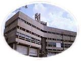

About Information

S. M. Joshi College is run by the Rayat Shikshan Sanstha, Satara, which was established with the aim of imparting education to the downtrodden masses. It was founded by Late Padmabhushan Dr. Karmaveer Bhaurao Patil in the year 1919, with a vision and mission to educate the children of downtrodden and deprived class and from remote area. He wanted to inculcate the dignity of labour among the students along with the social, spiritual, cultural and human values. He was a visionary who knew education only can eradicate all the social evils. So he established the schools, colleges in inaccessible area which was neglected by the educationists. The number of branches of Rayat Shikshan Sanstha reflects his vision and mission being translated into reality. He brought many promising children to Sanstha and shaped their lives to be the dignity in the society through to go abroad for further studies. Hence by nurturing the values of self help and dignity of labour, the mission statement is reflected.
S.M.Joshi College Hadapasar, Pune-28, has been working with the same mission. It is situated in urban area but the facilitators are from semi-rural and rural background. They are from all strata of society. The college has UG and PG courses; it serves multi-dimensionally in the field of higher education. The dimensions it serves as follows:
* Socio-Economic aspects.
* Cultural and Historical Aspects.
* Science and Scientific views.
* Commerce.
* Language and Literature Studies.
* Global dimensions: acquiring skill and competency.
* Personality Development.
College offers academic education in various Arts, Commerce and Science, as well as Computer and allied courses like B.C.A. Every year about 1500 students get enrolled in the courses conducted by college. College also offers post graduate courses like M.A Mcom Msc in Marathi, English and History. To make the students employable, the college runs various short term courses. The college by using ICT facilitates the students of advanced technology. The college also encourages developing a research culture, consultancy and extension activities. The college has been shifted to newly constructed building that provides adequate infrastructure. It facilitates the student support and progression. The good governance is reflected in the hierarchical structure of administrative and academic bodies. There are best and innovative practices in every field that can be summarized below.
Considering the extraordinary work done by Rayat Shikshan Sanstha in the field of mass education and in social field, especially for the people of down trodden section; scheduled caste, scheduled tribes and nomadic tribes, since 1919, the Government of Maharashtra, the Central government of India and some social organizations have appreciated the work by awarding following prestigious awards.
Highlighting Features:
* Established on 1st June 1986.
* Grant-in-Aid Co-Education College.
* Affiliated to University of Pune, Pune -07.
* 2F/12B Status from 1st July 2003 enabling UGC assistance and Schemes.
* Situated in Urban Area.
* Campus of 4.35 acres.
* More than 60% of girl students.
The overall, an academic, co-curricular, cultural and social performance of the college has been consistently excellent for years. On this basis it has been accredited at the ‘A’ grade by NAAC .
The college has been shifted to the newly constructed building. It has 4.35 Acres of campus. The college has developed enough infrastructure and learning resources. The college has a master plan. The campus is being developed with the help of plantation, leveling etc.
* Land of 4.35 Acres; Construction of 18115.5 Sq. Ft.
* Plantation on various occasions is done
* Classrooms, Computer Laboratories, Language Laboratory
* Central Library facility
* Sports facilities for indoor and outdoor games
The college is developing infrastructure as per the need and demand, sticking to the Master Plan of the college. The college as an educational centre involves in prime duties as Teaching, Learning and Evaluation. The college adopts learner centric method with regard to TLE.
* Publication of Prospectus and Academic Calendar.
* Transparent Admission Procedure.
* Teaching Plan of syllabus.
* Lecture and discussion method supported by use of audio-visual aids (Computer, LCD, Internet, OHP etc.)
* Introduction of syllabi, Evaluation process etc.
* Use of library by students and teachers.
* Teachers Quality Enhancement:
* Number of UG students:
Open access to students and book bank facility for the needy students.
* Organization of National ,State and University level seminars by college.
* Transparent evaluative system in case of internal examinations.
* Feedback from students evaluating teachers.
* Yearly filling of self appraisal form by teachers.
To achieve the all round development of our students, college offers various extracurricular activities like Sports, NCC, NSS, Cultural activities, “Sadhana” (College magazine), Earn & Learn Scheme, Competitive examination Guidance Centre, Placement cell ,Health services etc. College has always taken lead in national & social cause by conducting blood donation camps, collecting relief fund for flood & earthquake, organizing peace & people awareness rallies, etc. College is in a position to go through third phase of accreditation shortly .I hope College will prosper academically in future because we, the faculty, students, alumni together are walking on the road paved by the great visionary of Maharashtra & our founder Padmabhushan Dr.Karmveer Bhaurao Patil.
Thanks!
Principle- Dr. GAIKWAD NANASAHEB SURYABHAN